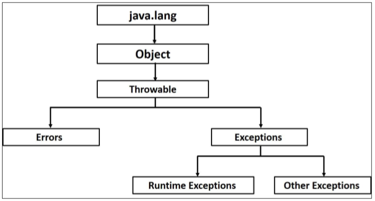

Checked exceptions
Checked exception là một exception xảy ra trong quá trình compiler. Nó còn được gọi là Compiler Time Exception. Tất nhiên, khi nó bị lỗi thì javac sẽ throw ra lỗi để người developer biết mà sửa.
| Sr.No. | Exception & Description |
|---|---|
| 1 | ClassNotFoundException Class not found. |
| 2 | CloneNotSupportedException Attempt to clone an object that does not implement the Cloneable interface. |
| 3 | IllegalAccessException Access to a class is denied. |
| 4 | InstantiationException Attempt to create an object of an abstract class or interface. |
| 5 | InterruptedException One thread has been interrupted by another thread. |
| 6 | NoSuchFieldException A requested field does not exist. |
| 7 | NoSuchMethodException A requested method does not exist. |
Unchecked exceptions
Unchecked exception là những exception mà xảy ra trong quá trình thực thi. Nó còn được biết đến dưới cái tên là Runtime Exception. Runtime exception thì ko thể phát hiện được trong quá trình compiler (vì đã chạy đâu mà biết) nên nó thường dẫn đến những lỗi rất phiền toái.
| Sr.No. | Exception & Description |
|---|---|
| 1 | ArithmeticException Arithmetic error, such as divide-by-zero. |
| 2 | ArrayIndexOutOfBoundsException Array index is out-of-bounds. |
| 3 | ArrayStoreException Assignment to an array element of an incompatible type. |
| 4 | ClassCastException Invalid cast. |
| 5 | IllegalArgumentException Illegal argument used to invoke a method. |
| 6 | IllegalMonitorStateException Illegal monitor operation, such as waiting on an unlocked thread. |
| 7 | IllegalStateException Environment or application is in incorrect state. |
| 8 | IllegalThreadStateException Requested operation not compatible with the current thread state. |
| 9 | IndexOutOfBoundsException Some type of index is out-of-bounds. |
| 10 | NegativeArraySizeException Array created with a negative size. |
| 11 | NullPointerException Invalid use of a null reference. |
| 12 | NumberFormatException Invalid conversion of a string to a numeric format. |
| 13 | SecurityException Attempt to violate security. |
| 14 | StringIndexOutOfBounds Attempt to index outside the bounds of a string. |
| 15 | UnsupportedOperationException An unsupported operation was encountered. |
Exception Hierarchy
Tất cả exception class đều là subtype của java.lang.Exception Class. Exception Class lại là subclass của Throwable Class. Một thằng khác không phải là exception, nhưng là subclass của Throwable đó là Errors. Xem cái hierarchy dưới dây:
Catching Exceptions
Đôi lúc, ta cảm giác có 1 đoạn code nào đó có thể xảy ra lỗi, khi đó, ta sẽ đưa nó vào trong try catch để có thể handle được trường hợp khi mà nó xảy ra.
Trong trường hợp đoạn code có thể xảy ra nhiều lỗi, ta có thể bỏ thêm cái catch để xử lý cho từng trường hợp, hoặc ném ra Exception đại diện cho tất cả.
Ngoài ra ta còn có thể add thêm cái final để nó chạy sau khi mọi thứ đã xảy ra. Nó thường được đưa vào lúc đóng file, ghi objects này nọ ...
Kinh nghiệm về catching exception
Trong lập trình, ta thường có throw để ném ra một exception, và try catch để bắt ra 1 exception.
Throw thì khỏi phải bàn nữa, ta sử dụng throw để thông báo ra một exception nào đó mà hệ thống đang gặp phải, nhằm thông báo cho developer phải xử lý nó. Nhưng, throw exception ntn cho hợp lí, và xử lý nó ra sao? đấy là điều đáng quan tâm.
Nếu biết đủ thông tin và cách giải quyết khi gặp ngoại lệ thì catch nó lại và thực hiện các thao tác giải quyết, nếu chưa đủ thông tin để giải quyết, thả nó ra.
Việc throw exception, thường được thực hiện ở những tầng thấp hơn. Chúng ta thường throw ra những thứ mà ta không biết hoặc không đủ thông tin để giải quyết. Và điều đó sẽ đẩy trách nhiệm về việc xử lý những exception này ở level cao hơn, khi mà lớp high-level này có đủ thông tin để xử lý
Đừng ngại throw lỗi, khi mà bạn ko có đủ thông tin để xử lý nó.
Đừng có che dấu nó. Hoặc bạn catch nó để xử lý, hoặc bạn throw ra để người khác xử lý.
Trong Java, có 2 cách để bạn throw ra exception. Bạn có thể sử dụng từ khóa throw để chủ động throw ra một exception hoặc sử dụng từ khóa throws cho phương thức để cho nó tự động gọi. 2 cái, một cái là bạn chủ động throw ra, một cái là hệ thống tự làm.
Ví dụ
public UserDTO getUserByID (id) throws ObjectNotFoundException, DBExceptions{
try{
db.connectDatabase();
UserDTO result = db.findUserByID(id)
if(result == null){
throw new ObjectNotFoundException("Cannot found the user with id " + id);
}
} catch(e){
throw new DBExceptions("Cannot connect db. Please check your data.");
}
}
public void connectDatabase () throws ConnectDatabaseException{
connectDB with user, password, dbname
}
Giả sử trong method connectDatabase, hệ thống tự động throws ra một Exception như vậy.
Ở method trên kia, việc wrap code trong block try catch sẽ giúp develop phát hiện ra exception và xử lý (trong trường hợp này là throw rat tiếp). Tuy nhiên, nó chủ động throw ra một Exception, khi mà ko thể find được cái user đó bằng ID. Và vì vậy mà cái method getUserByID nó sẽ throws Exception như thế.
Quá đó ta cũng hiểu về việc try catch và cách sử dụng của nó. Ở đây cái method findByUserById/findByUserName nó có thể throw ra một Exception object not null, nhưng vì ta ko biết được các service mà nó sẽ sử dụng là ntn, nên ta quyết định chỉ throw nó ra và đưa trách nhiệm giải quyết vấn đề về những thằng ở level cao hơn.
Ví dụ, với method addUser (check unique username) thì cái exception kia nếu throw ra có ý nghĩa là chưa có ai đăng kí cái tên này nên mày có thể sử dụng nó, trong khi đó với một method updateUser, thì rõ ràng đó là cái Errors vì thông tin User này ko tồn tại trong hệ thống.